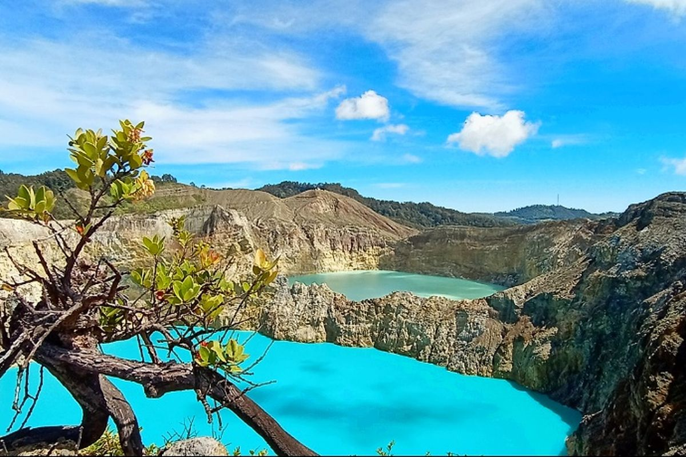
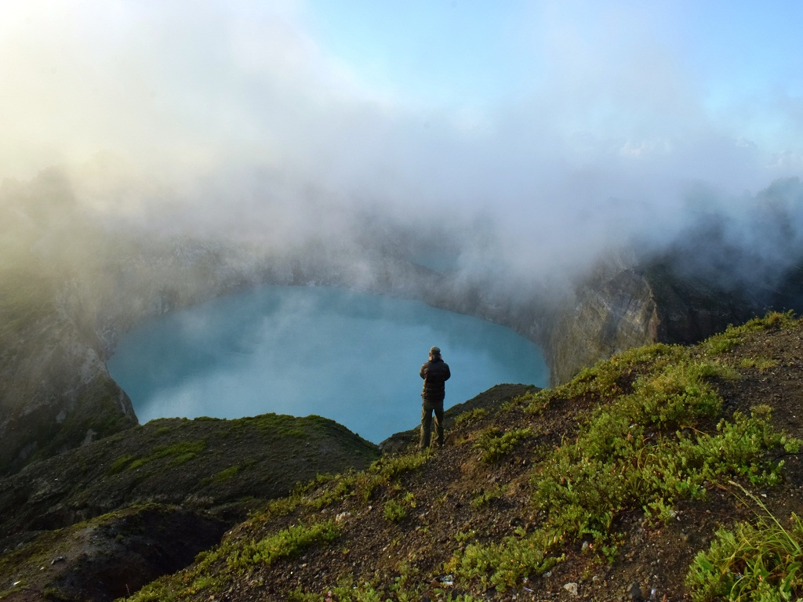
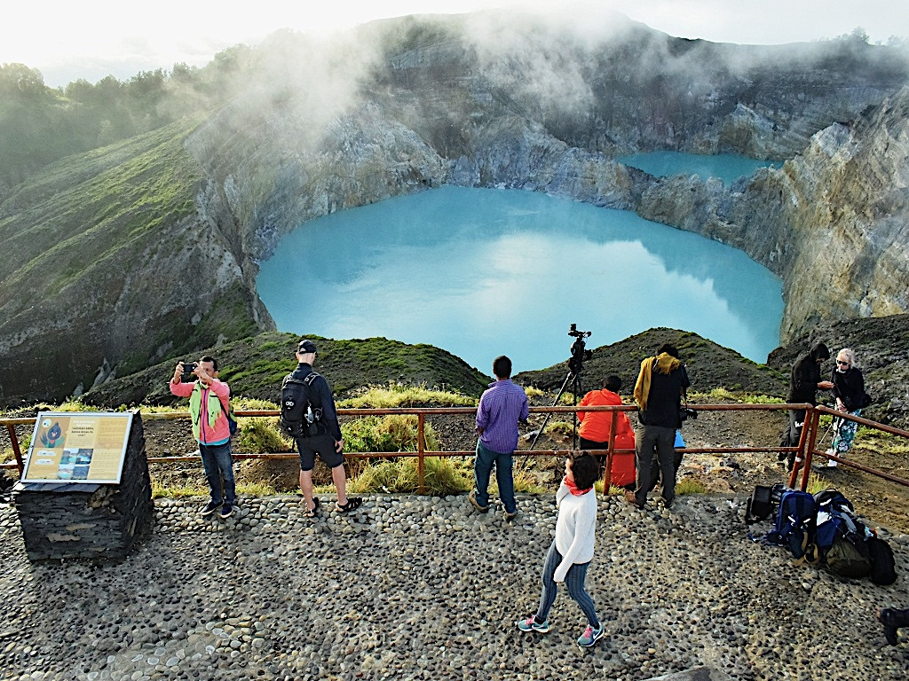

Tentang Danau Kelimutu

Danau Kelimutu merupakan salah satu destinasi wisata alam yang terkenal di Flores. Danau ini memiliki tiga kawasan danau yang dikenal dengan warna air yang berbeda.
Keindahan pemandangan Danau Kelimutu menjadikannya salah satu tempat yang menarik untuk dikunjungi oleh wisatawan ketika melakukan perjalanan ke Flores.
Video Danau Kelimutu
Video menampilkan suasana dan keindahan Danau Kelimutu.
Galeri Danau Kelimutu



Informasi Wisata
| Informasi | Keterangan |
|---|---|
| Destinasi | Danau Kelimutu |
| Jenis Wisata | Wisata Alam |
| Lokasi | Flores, Nusa Tenggara Timur |
| Aktivitas | Menikmati Pemandangan dan Fotografi |
Aktivitas Wisata
- Menikmati pemandangan Danau Kelimutu.
- Menikmati keindahan alam sekitar.
- Mengabadikan perjalanan dengan fotografi.
- Menikmati suasana alam pegunungan.
- Menggunakan jasa pemandu perjalanan.
Audio Trip to Flores
Booking Pemandu Perjalanan
Ingin menjelajahi Danau Kelimutu bersama pemandu? Silakan mengisi formulir booking berikut.